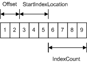

title: Introduction to Buffers in Direct3D 11 description: A buffer resource is a collection of fully typed data grouped into elements. ms.assetid: e33ca01e-f13c-4f91-b0db-2b2bc6b4fd8f keywords:
A buffer resource is a collection of fully typed data grouped into elements. You can use buffers to store a wide variety of data, including position vectors, normal vectors, texture coordinates in a vertex buffer, indexes in an index buffer, or device state. A buffer element is made up of 1 to 4 components. Buffer elements can include packed data values (like R8G8B8A8 surface values), single 8-bit integers, or four 32-bit floating point values.
A buffer is created as an unstructured resource. Because it is unstructured, a buffer cannot contain any mipmap levels, it cannot get filtered when read, and it cannot be multisampled.
The following are the buffer resource types supported by Direct3D 11. All buffer types are encapsulated by the ID3D11Buffer interface.
A vertex buffer contains the vertex data used to define your geometry. Vertex data includes position coordinates, color data, texture coordinate data, normal data, and so on.
The simplest example of a vertex buffer is one that only contains position data. It can be visualized like the following illustration.
More often, a vertex buffer contains all the data needed to fully specify 3D vertices. An example of this could be a vertex buffer that contains per-vertex position, normal and texture coordinates. This data is usually organized as sets of per-vertex elements, as shown in the following illustration.

This vertex buffer contains per-vertex data; each vertex stores three elements (position, normal, and texture coordinates). The position and normal are each typically specified using three 32-bit floats (DXGI_FORMAT_R32G32B32_FLOAT) and the texture coordinates using two 32-bit floats (DXGI_FORMAT_R32G32_FLOAT).
To access data from a vertex buffer you need to know which vertex to access, plus the following additional buffer parameters:
Before you create a vertex buffer, you need to define its layout by creating an ID3D11InputLayout interface; this is done by calling the ID3D11Device::CreateInputLayout method. After the input-layout object is created, you can bind it to the input-assembler stage by calling the ID3D11DeviceContext::IASetInputLayout.
To create a vertex buffer, call ID3D11Device::CreateBuffer.
Index buffers contain integer offsets into vertex buffers and are used to render primitives more efficiently. An index buffer contains a sequential set of 16-bit or 32-bit indices; each index is used to identify a vertex in a vertex buffer. An index buffer can be visualized like the following illustration.

The sequential indices stored in an index buffer are located with the following parameters:
Start of Index Buffer = Index Buffer Base Address + Offset (bytes) + StartIndexLocation * ElementSize (bytes);
In this calculation, ElementSize is the size of each index buffer element, which is either two or four bytes.
To create an index buffer, call ID3D11Device::CreateBuffer.
A constant buffer allows you to efficiently supply shader constants data to the pipeline. You can use a constant buffer to store the results of the stream-output stage. Conceptually, a constant buffer looks just like a single-element vertex buffer, as shown in the following illustration.

Each element stores a 1-to-4 component constant, determined by the format of the data stored. To create a shader-constant buffer, call ID3D11Device::CreateBuffer and specify the D3D11_BIND_CONSTANT_BUFFER member of the D3D11_BIND_FLAG enumerated type.
A constant buffer can only use a single bind flag (D3D11_BIND_CONSTANT_BUFFER), which cannot be combined with any other bind flag. To bind a shader-constant buffer to the pipeline, call one of the following methods: ID3D11DeviceContext::GSSetConstantBuffers, ID3D11DeviceContext::PSSetConstantBuffers, or ID3D11DeviceContext::VSSetConstantBuffers.
To read a shader-constant buffer from a shader, use a HLSL load function (for example, Load). Each shader stage allows up to 15 shader-constant buffers; each buffer can hold up to 4096 constants.
Â
Â